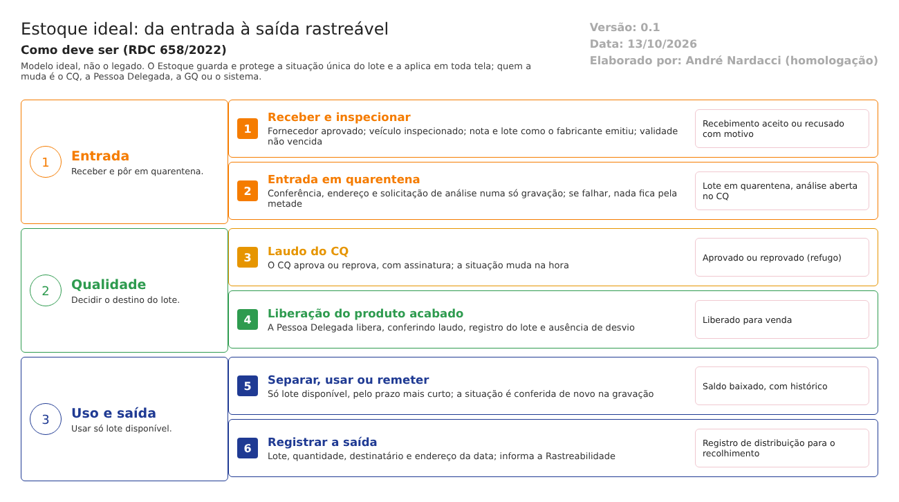

O ideal. Como o Estoque deve trabalhar para atender à RDC 658/2022 e ao Guia 33/2020. Este documento não descreve o legado. Usa o que foi levantado no código e confirmado nos testes de tela só para mostrar o que manter, o que corrigir e o que construir. Complementa modelo-ideal/01-qualidade-entre-modulos.md, que define as travas entre os módulos. Versão 0.1, de 13/10/2026, para validação com o Estoque, o CQ e a Garantia da Qualidade.
1. O papel do Estoque no ERP
O Estoque é o dono do saldo e da situação de cada lote. Tudo o que a fábrica usa, separa, remete ou vende passa por ele, e todos os outros módulos perguntam a ele "este lote pode?".
No modelo ideal, o Estoque guarda e protege a situação única do lote, mas não decide sobre ela: quem a muda é o CQ (laudo), a Pessoa Delegada (liberação), a GQ (retenção e recolhimento) ou o próprio sistema (pelas datas de validade e de reanálise). O Estoque executa a decisão na hora, em todas as telas.
| O Estoque faz | O Estoque não faz |
|---|---|
| Recebe só de fornecedor aprovado, com inspeção documentada | Aprovar ou reprovar o lote (é do CQ) |
| Põe todo lote que entra em quarentena e só o tira dela por decisão do CQ | Liberar o produto acabado para venda (é da Pessoa Delegada, trava 4) |
| Guarda o saldo por endereço e a situação única do lote, com histórico de toda mudança | Mudar a situação de um lote por conta própria |
| Separa e remete só lote disponível, dentro da validade, pelo prazo mais curto | Deixar uma tela dizer "sucesso" sem ter gravado |
| Registra cada saída para o recolhimento | Apagar ou alterar uma saída já feita |
2. Como o lote anda

O lote passa por estas situações, e cada mudança fica no histórico (quem, quando e por quê):
| Etapa | Situação do lote | Quem leva a ela | O que o sistema confere |
|---|---|---|---|
| Recebimento | Em recebimento | Estoque | Fornecedor aprovado; inspeção do veículo feita; nota e lote como o fabricante emitiu; validade não vencida |
| Entrada | Quarentena | Sistema, na gravação | A gravação é uma só (conferência, endereço e solicitação de análise); se falhar, nada fica pela metade |
| Análise | Em análise | Sistema, quando o CQ colhe a amostra | A amostra sai do saldo pela quantidade pesada |
| Laudo | Aprovado pelo CQ ou Reprovado | CQ, com assinatura | O laudo muda a situação na hora; reprovado só vai a local de refugo |
| Liberação | Liberado para venda (produto acabado) | Pessoa Delegada, com assinatura | Laudo, registro do lote e ausência de desvio aberto |
| Uso | Separado, usado ou remetido | Estoque | Só lote disponível; pelo prazo mais curto; situação conferida de novo na gravação |
| Qualquer momento | Retido, Vencido, Reanálise vencida ou Recolhido | GQ, CQ ou o sistema | O lote sai de tudo, até a decisão registrada |
3. As funções do Estoque ideal
Ação: Manter = o legado já faz como deve; Corrigir = existe, mas não atende; Construir = não existe.
| # | Função | Referência | Ação | Como deve funcionar | No legado hoje |
|---|---|---|---|---|---|
| 1 | Situação única do lote, guardada e protegida | Arts. 157 e 189 | Corrigir | O Estoque guarda uma só situação por lote (tabela da seção 4) e a aplica em toda tela: separar, movimentar, remeter, vender. Só o sistema, o CQ, a Pessoa Delegada e a GQ a mudam; o Estoque não decide | Existem situações separadas no saldo (quarentena, vencido, reanálise, bloqueado, reprovado, retenção); faltam "liberado para venda", "retido" e "recolhido", e as travas estão desligadas |
| 2 | Recebimento só de fornecedor aprovado | Art. 8º, VI | Construir | Cadastro único de fornecedor qualificado, por material, sob a GQ. O recebimento de fornecedor não qualificado é recusado ou exige decisão registrada da GQ | A avaliação não qualifica nem bloqueia (DV-EST-022) |
| 3 | Inspeção e conferência documentadas | Arts. 156 e 183 | Corrigir | Inspeção do veículo obrigatória, com respostas; veículo reprovado não recebe; divergência de quantidade com justificativa e aviso à Qualidade | Checklist opcional, aprovado sem respostas; divergência aceita com "Deseja continuar?" |
| 4 | Quarentena imediata e sem atalho | Art. 157 | Corrigir | Todo lote que entra (compra, produto acabado, devolução) nasce em quarentena e só sai por decisão do CQ. A saída da quarentena é conferida no servidor | As entradas criam a quarentena; a trava de saída está desligada; a devolução da produção volta direto ao saldo |
| 5 | Validade e reanálise: bloqueio automático e uso pelo prazo mais curto | Art. 189 | Corrigir | Lote vencido ou com reanálise vencida muda sozinho de situação, no dia; a entrada recusa validade anterior a hoje; a separação sugere o lote que vence antes | O saldo já separa o vencido; a entrada aceita lote vencido; a lista não ordena pela validade |
| 6 | Lote como o fabricante o emitiu | Art. 141, V | Corrigir | O código do lote é guardado exatamente como na embalagem, com o lote do fabricante ao lado do lote interno | Perde os hífens (DV-EST-001) |
| 7 | Produto acabado só de ordem de produção liberada | Arts. 124 e 164 | Corrigir | A entrada de produto acabado exige a ordem de produção, lida da Produção; não se digita lote livre | Ordem opcional, lote inventado aceito (DV-EST-024) |
| 8 | Liberação pela Pessoa Delegada | Art. 8º, XV | Construir | O produto acabado só vai a "liberado para venda" por decisão registrada da Pessoa Delegada, com assinatura eletrônica, conferindo laudo, registro do lote e ausência de desvio aberto | A aprovação do laudo faz as vezes; não existe a situação |
| 9 | Amostras de retenção e referência | Art. 14, VIII | Corrigir | Prazo de guarda por produto e trava de saída antes do prazo; as amostras ficam fora do saldo disponível | O saldo já separa as amostras; sem prazo nem trava |
| 10 | Gravar tudo ou nada | Art. 124 | Corrigir | Nenhuma tela mostra sucesso sem ter gravado; o conjunto da operação (conferência, endereçamento, análise) é uma só gravação | Endereçamento mostra sucesso sem gravar (DV-EST-016); conferência com erro fica "conferida" (DV-EST-015) |
| 11 | Histórico de toda alteração de saldo e de cadastro | Art. 125 | Corrigir | Cada mudança de saldo, de situação, de endereço e de avaliação grava valor anterior, novo, quem, quando e motivo, no servidor | Saldos por gatilhos, sem autoria; exclusão de endereço sem justificativa; avaliação sem histórico |
| 12 | Registro de saída e de distribuição | Arts. 346 e 347 | Corrigir | Cada saída (remessa, venda, devolução ao fornecedor) guarda lote, quantidade, destinatário e endereço da data; a saída nunca é apagada; o registro chega à Rastreabilidade e à GQ | A remessa guarda destinatário e lote; não informa a Rastreabilidade; eventos ANVISA próprios, repetidos |
| 13 | Integrações confiáveis | Guia 33, 9.3.2.3 | Corrigir | Estoque e CQ, Estoque e Produção, Estoque e Comercial confirmados pelos dois lados; falha avisa e não deixa a operação pela metade; a Produção usa só a API do Estoque | Análise que não abre sem aviso; Produção grava direto no banco do Estoque |
| 14 | Dados de entrada com formato e limite | Guia 33, 9.3.2.3 | Corrigir | Quantidade com casa decimal visível e confirmada; limites de período; nota fiscal com mensagem do campo que falta | "100" vira 0,100; 13 meses aceitos; série em branco sem aviso |
| 15 | Ajuste de saldo no inventário | Art. 125 | Manter | Apuração com usuário, justificativa e aprovação; histórico do lote mostra o ajuste | A verificar no teste |
4. A situação do lote e o que cada situação permite
Esta tabela é a trava 1 do modelo ideal, vista do Estoque. "Sim" é o único caso em que a tela oferece o lote.
| Situação | Separar para a produção | Movimentar para local comum | Remeter ou vender | Quem a muda |
|---|---|---|---|---|
| Quarentena | Não | Não | Não | Sistema (entrada) |
| Em análise | Não | Não | Não | Sistema, pelo CQ |
| Aprovado pelo CQ | Sim (material); não (produto acabado) | Sim | Não (produto acabado) | CQ, com assinatura |
| Liberado para venda | — | Sim | Sim | Pessoa Delegada, com assinatura |
| Reprovado | Não | Só local de refugo | Não | CQ, com assinatura |
| Retido | Não | Não | Não | GQ ou CQ |
| Vencido ou reanálise vencida | Não | Só local de bloqueio | Não | Sistema, pela data |
| Recolhido | Não | Não | Não | GQ |
| Amostra (retenção, referência, estabilidade) | Não | Não | Não | CQ |
Regra: a situação é conferida na gravação, e não só na lista. Um lote que mudou de situação entre a escolha e a confirmação é recusado.
5. Integrações com os outros módulos
Todas seguem o requisito 16 do documento 01: quando falham, avisam e não deixam a operação pela metade.
| Com | O Estoque recebe | O Estoque envia | Quando | Trava |
|---|---|---|---|---|
| Controle da Qualidade | Laudo (aprovado ou reprovado, validade, nova data de reanálise); pedido de amostra | Solicitação de análise de cada lote que entra; amostra pesada | Na entrada; no laudo | 1, 2 |
| Garantia da Qualidade | Retenção por desvio, reclamação ou recolhimento; qualificação do fornecedor; certificação da Pessoa Delegada | Lista de onde está cada lote; situação do lote | Ao abrir o evento; no recebimento | 1, 3, 4, 5, 11 |
| Produção | Ordem de produção liberada (para a entrada de produto acabado); pedido de insumos | Saldo e reserva dos insumos; lotes separados; produto acabado aceito | Na solicitação, na pesagem e na entrada | 1 |
| Comercial | Reserva e remessa da venda | Lotes liberados para venda; confirmação da reserva, da separação e da remessa | A cada pedido, fatura e cancelamento | 1, 4 |
| Rastreabilidade | Pedido de situação do lote | Evento de entrega e de recebimento, lido pela Rastreabilidade (um só registro) | Na saída | 1, 11 |
| Principal | Usuários, funções, assinatura eletrônica, locais | — | Em cada gravação | — |
6. Quem faz o quê no Estoque
| Função | Pode | Não pode |
|---|---|---|
| Recebimento | Receber, inspecionar e conferir | Autorizar o recebimento que ele mesmo cadastrou |
| Almoxarife | Endereçar, movimentar, separar, remeter | Mudar a situação do lote |
| CQ | Aprovar ou reprovar o laudo, com assinatura | Aprovar o laudo da análise que ele mesmo fez |
| Pessoa Delegada | Liberar o produto acabado para venda | Ser quem aprovou o laudo daquele lote, salvo decisão registrada (a validar) |
| GQ | Reter, recolher, qualificar fornecedor | Mexer em saldo |
| Inventário | Contar e apurar | Apurar o que ele mesmo contou |
A função é conferida no servidor, em toda gravação, e não só na tela (documento 01, requisito 15).
7. O que manter do legado
O que os testes e o código mostram que já funciona como deve e vale levar para a nova versão:
- Quem cadastra não autoriza: o recebimento recusa a mesma pessoa nos dois papéis (CT-EST-189, passou).
- Validade obrigatória para item com controle de validade (CT-EST-185, passou).
- Entrada em quarentena com análise aberta: as entradas de produção e avulsa criam o saldo em quarentena e a solicitação no CQ (CT-EST-097 e 210, passaram).
- Item, lote e fabricante repetidos na mesma lista são recusados (CT-EST-095).
- Almoxarifado visível só para o grupo ligado a ele (CT-EST-014).
- Saldo separado por situação (quarentena, vencido, reanálise, bloqueado, reprovado, retenção, referência, estabilidade e disponível), que serve de base à situação única.
- Lista de lotes que exclui o que não está disponível (RN-EST-094, RN-EST-102, RN-EST-125).
- Reanálise agendada com análise aberta no CQ e lote fora do disponível (RN-EST-087).
- Histórico do lote que reúne movimentações, análises, notas e remessas (RN-EST-076).
- Justificativa na alteração, na exclusão e no cancelamento.
- Exclusão lógica e registro de quem criou e alterou.
8. Pontos para validar com o Estoque, o CQ e a GQ
- Quem é a Pessoa Delegada, e a liberação do produto acabado é a aprovação do laudo ou uma etapa a mais?
- A sobra devolvida da produção precisa de nova análise antes de voltar ao saldo?
- O que é "fornecedor aprovado" e o que o recebimento faz com o não aprovado: recusa ou pede decisão da GQ?
- Qual é o prazo de guarda das amostras de retenção, por produto?
- A entrada de produto acabado exige sempre a ordem de produção, ou há entradas sem ordem na prática (produto devolvido, terceirizado)?
- O Estoque decide a situação "vencido" pelo dia, ou a empresa tem uma tolerância?
O que a ANVISA pede: textos citados
Texto literal das normas citadas em cada tema, extraído dos arquivos da pasta Documentação/ (RDC nº 658/2022 em português e Guia nº 33/2020) por homologacao/ferramentas/citar_normas_diagnostico.py. "(...)" marca trechos omitidos. No portal, clique na referência de cada tema para ver o texto.
Tema 1 · Situação única do lote, guardada e protegida
RDC 658/2022, art. 157
Art. 157. Os materiais recebidos e os produtos acabados devem ser fisicamente ou administrativamente colocados em quarentena imediatamente após o recebimento ou processamento, até que sejam liberados para uso ou distribuição.
RDC 658/2022, art. 189
Art. 189. Somente matérias-primas que tiverem sido liberadas pelo departamento de Controle de Qualidade e que estiverem dentro de sua data de reteste devem ser utilizadas.
Tema 2 · Recebimento só de fornecedor aprovado
RDC 658/2022, art. 8º
Art. 8º Um Sistema da Qualidade Farmacêutica adequado à fabricação de medicamentos deve garantir que:
(...)
VI - sejam tomadas providências para a fabricação, fornecimento e uso das matérias-primas e materiais de embalagem corretos, a seleção e monitoramento dos fornecedores e verificação da conformidade de cada recebimento com o fornecedor aprovado;
(...)
Tema 3 · Inspeção e conferência documentadas
RDC 658/2022, art. 156
Art. 156. Danos aos recipientes e qualquer outro problema que possa afetar adversamente a qualidade do material devem ser investigados, registrados e relatados à Unidade de Qualidade.
RDC 658/2022, art. 183
Art. 183. Para cada entrega de matéria-prima, os recipientes devem ser verificados quanto à integridade da embalagem, incluindo o selo de evidência de violação quando pertinente, também deve ser verificada a correspondência entre a nota de entrega, o pedido de compra, as etiquetas do fornecedor e as informações aprovadas pelo fabricante do medicamento para o fabricante e fornecedor dos excipientes.
Parágrafo único. As verificações durante o recebimento de cada entrega devem ser documentadas.
Tema 4 · Quarentena imediata e sem atalho
RDC 658/2022, art. 157
Art. 157. Os materiais recebidos e os produtos acabados devem ser fisicamente ou administrativamente colocados em quarentena imediatamente após o recebimento ou processamento, até que sejam liberados para uso ou distribuição.
Tema 5 · Validade e reanálise: bloqueio automático e uso pelo prazo mais curto
RDC 658/2022, art. 189
Art. 189. Somente matérias-primas que tiverem sido liberadas pelo departamento de Controle de Qualidade e que estiverem dentro de sua data de reteste devem ser utilizadas.
Tema 6 · Lote como o fabricante o emitiu
RDC 658/2022, art. 141
Art. 141. Os registros de recebimento devem incluir:
(...)
V - o número de lote ou número de referência do fabricante;
(...)
Tema 7 · Produto acabado só de ordem de produção liberada
RDC 658/2022, art. 124
Art. 124. Os registros devem ser realizados ou completados sempre que uma ação for realizada e de modo a permitir que todas as atividades significativas relativas à fabricação de medicamentos sejam rastreáveis.
RDC 658/2022, art. 164
Art. 164. Em todos os momentos durante o processo, todos os materiais, recipientes de granel, itens principais de equipamentos e, quando necessário, as salas utilizadas devem ser rotuladas e identificadas com uma indicação do produto ou material que está sendo processado, sua concentração, quando aplicável, e número do lote.
Parágrafo único. Quando for o caso, a indicação de que trata o caput deste artigo também deve mencionar o estágio de produção.
Tema 8 · Liberação pela Pessoa Delegada
RDC 658/2022, art. 8º
Art. 8º Um Sistema da Qualidade Farmacêutica adequado à fabricação de medicamentos deve garantir que:
(...)
XV - os medicamentos não sejam comercializados ou distribuídos antes da Pessoa Delegada pelo Sistema de Gestão da Qualidade Farmacêutica ter certificado que cada lote do produto foi produzido e controlado de acordo com os requerimentos de registro e quaisquer outras normas relevantes à produção, ao controle e à liberação de medicamentos;
(...)
Tema 9 · Amostras de retenção e referência
RDC 658/2022, art. 14
Art. 14. Os requerimentos básicos do Controle de Qualidade são:
(...)
VIII - amostras de referência suficientes de matérias-primas e produtos devem ser mantidas de acordo com a instrução normativa específica para permitir a futura análise do produto, se necessário.
Tema 10 · Gravar tudo ou nada
RDC 658/2022, art. 124
Art. 124. Os registros devem ser realizados ou completados sempre que uma ação for realizada e de modo a permitir que todas as atividades significativas relativas à fabricação de medicamentos sejam rastreáveis.
Tema 11 · Histórico de toda alteração de saldo e de cadastro
RDC 658/2022, art. 125
Art. 125. Toda a alteração feita no registro de um documento deve ser assinada e datada, devendo permitir a leitura da informação original.
Parágrafo único. Quando apropriado, o motivo da alteração deve ser registrado.
Tema 12 · Registro de saída e de distribuição
RDC 658/2022, art. 346
Art. 346. Os registros de distribuição de lote/produto devem estar prontamente disponíveis para as pessoas responsáveis pelo recolhimento.
RDC 658/2022, art. 347
Art. 347. Os registros de distribuição devem conter informações suficientes sobre atacadistas e clientes diretamente abastecidos, mesmo quando se trate de produtos exportados e amostras médicas.
Tema 13 · Integrações confiáveis
Guia nº 33/2020, item 9.3.2.3 (Requisitos Operacionais)
Dados – requisitos relacionados ao manuseio de dados, considerando-se o seu impacto na segurança do paciente, na qualidade do produto e na integridade dos dados, abrangendo os seguintes pontos: - Definição dos registros eletrônicos; - Definição dos tipos de dados, incluindo a identificação das características, formatação, parâmetros críticos, intervalo e formato de datas válidos, limites e exatidão e assim por diante; - Onde e como os dados serão gravados (ex.: bancos de dados relacionais, arquivos criptografados etc.) - Campos necessários; - Migração de dados (importação e exportação); - Entrada de dados e subsequente edição; - Backup e recuperação; - Requisitos para arquivamento; - Segurança dos dados e integridade.
Interfaces – devem ser definidas (se aplicável), abrangendo os seguintes pontos: - Interface(s) com o usuário – definidas em termos de níveis de acesso (operador, administrador, gerente do sistema) ou funções quando apropriado; - Interface(s) com outros sistemas; - Interface(s) com equipamentos, tais como sensores ou atuadores. Isto pode incluir listas de I/O (entrada e saída) para sistemas utilizados para controle de processos; - Forma de entrada e saída de dados pelos usuários (ex.: teclado, leitor de código de barras, impressoras etc.).
Tema 14 · Dados de entrada com formato e limite
Guia nº 33/2020, item 9.3.2.3 (Requisitos Operacionais)
Dados – requisitos relacionados ao manuseio de dados, considerando-se o seu impacto na segurança do paciente, na qualidade do produto e na integridade dos dados, abrangendo os seguintes pontos: - Definição dos registros eletrônicos; - Definição dos tipos de dados, incluindo a identificação das características, formatação, parâmetros críticos, intervalo e formato de datas válidos, limites e exatidão e assim por diante; - Onde e como os dados serão gravados (ex.: bancos de dados relacionais, arquivos criptografados etc.) - Campos necessários; - Migração de dados (importação e exportação); - Entrada de dados e subsequente edição; - Backup e recuperação; - Requisitos para arquivamento; - Segurança dos dados e integridade.
Tema 15 · Ajuste de saldo no inventário
RDC 658/2022, art. 125
Art. 125. Toda a alteração feita no registro de um documento deve ser assinada e datada, devendo permitir a leitura da informação original.
Parágrafo único. Quando apropriado, o motivo da alteração deve ser registrado.